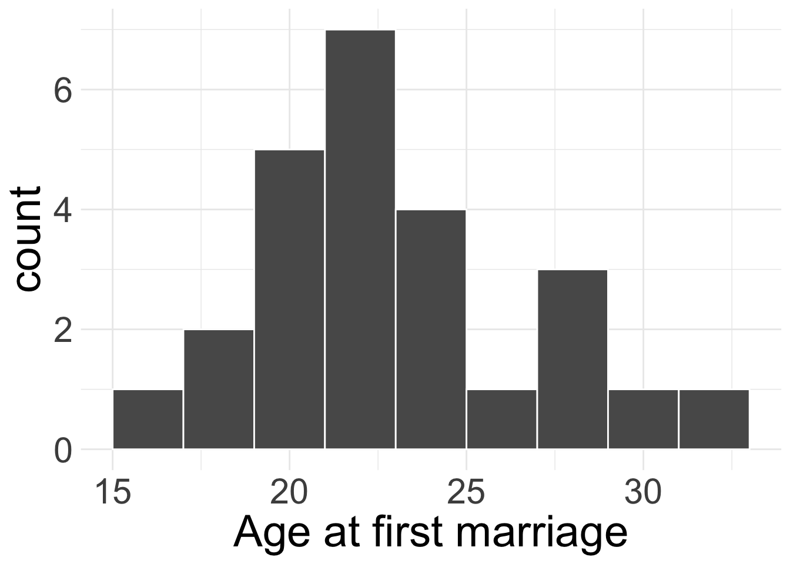
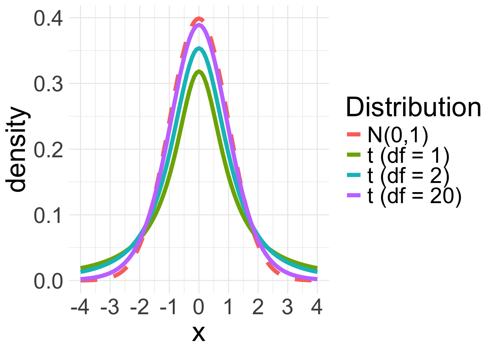
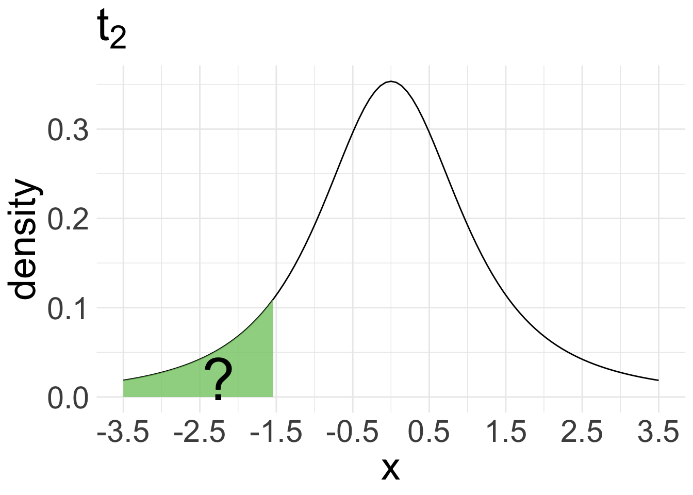
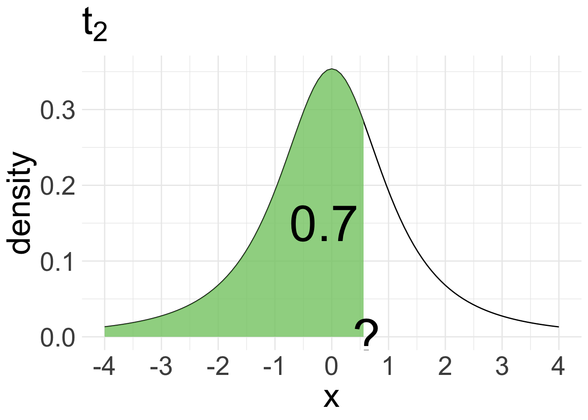
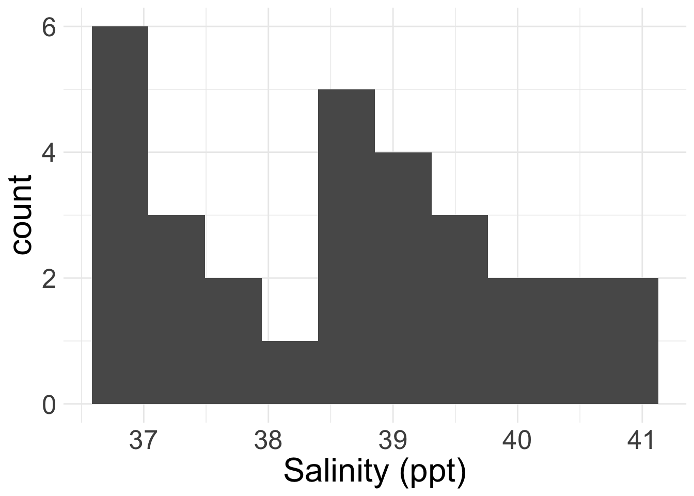
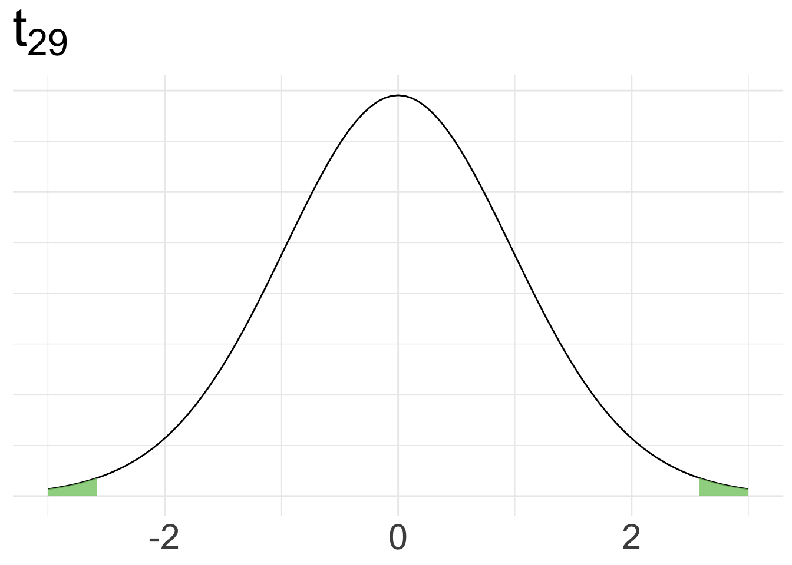

CIs and HTs for a single mean
CLT-based
Housekeeping
Dessert social today! 3-4:30pm in WNS 105!
Modified office hours today: 1:30-2:30pm instead of 2-3pm
Homework 7 due tonight
Project proposals due Wednesday night
Recap
CLT: if we have a sufficiently large sample of \(n\) independent observations from a population with mean \(\mu\) and standard deviation \(\sigma\), then \(\bar{X} \overset{\cdot}{\sim} N\left(\mu, \frac{\sigma}{\sqrt{n}}\right)\)
To obtain a \(\gamma\times 100\%\) CI via CLT, we use
\[ \text{point estimate} \pm \text{critical value} \times \text{SE} \]
- We may need to replace the standard error with an estimate \(\widehat{SE}\)
Checking normality
Remember, CLT requires a sufficiently large sample size \(n\) or assumption of Normality of the underlying data.
No perfect way to check Normality, but rule of thumb:
If \(n < 30\) small: check that there are no clear outliers
If \(n \geq 30\) large: check that there are no particularly extreme outliers
CI for a single mean
CI for a single mean (known variance)
Suppose we want a \(\gamma\times 100\%\) CI for population mean \(\mu\).
If CLT holds, then we know
\[ \bar{X} \overset{\cdot}{\sim} N\left(\mu, \frac{\sigma}{\sqrt{n}}\right) \]
So our \(\gamma \times 100\%\) CI for \(\mu\) is:
\[ \text{point estimate} \pm \underbrace{\text{critical value} \times \text{SE}}_{\text{Margin of Error}} = \bar{x}_{obs} \pm z_{(1+\gamma)/2}^* \times \frac{\sigma}{\sqrt{n}} \]
Example: age at marriage
In 2006-2010, the CDC conducted a thorough survey asking US women their age at first marriage. Suppose it is known that the standard deviation of the ages at first marriage is 5 years. Suppose we randomly sample 25 US women and ask them their age at first marriage (plotted below). Their average age at marriage was 23.32.
What is/are the population parameter(s)? What is the statistic?
We will obtain an 80% confidence interval for the mean age of US women at first marriage.
Are conditions of CLT met?
If so, what does CLT tell us?
Example: age at marriage (cont.)
Obtain an 80% confidence interval for the mean age of US women at first marriage.
- Because we have a random sample (independence) and there are no outliers in the data (normality condition), we can proceed with CLT!
\[\bar{X} \overset{\cdot}{\sim}N\left(\mu, \frac{5}{\sqrt{25}}\right) = N(\mu, 1)\]
- Construct your confidence interval and interpret!
- Point estimate: \(\bar{x}_{obs} = 23.32\)
- Standard error: \(\text{SE} = 1\)
- Critical value: \(z_{0.9}^{*} =\)
qnorm(0.9, 0, 1)\(= 1.28\)
So our 80% confidence interval is \(23.32 \pm 1.28 \times 1 = (22.04, 24.6)\)
Utility of this model
The previous formula for the confidence interval for \(\mu\) relies on knowing \(\sigma\)
But wait…
Want to construct a CI for \(\mu\) because we don’t know its value
If we don’t know \(\mu\), it seems highly unlikely that we would know \(\sigma\)!
So in practice, we will have to estimate standard error for \(\bar{X}\):
\[ \widehat{\text{SE}} = \frac{s}{\sqrt{n}} \]
where \(s\) is the observed sample standard deviation
- Recall we did something similar for CI for \(p\), where we replaced \(p\) with \(\hat{p}_{obs}\)
Variance issue
Estimating variance is extremely difficult when \(n\) is small, and still not great for large \(n\)
- Thus, replacing \(\sigma\) with \(s\) invalidates CLT
So if \(\sigma\) is unknown, we cannot use the Normal approximation to model \(\bar{X}\) for inferential tasks
Instead, we will use a new distribution for inference calculations, called the \(t\)-distribution
\(t\)-distribution
The \(t\)-distribution is symmetric and bell-curved (like the Normal distribution)
Has “thicker tails” than the Normal distribution (the tails decay more slowly)

- \(t\)-distribution is always centered at 0
- One parameter: degrees of freedom (df) defines exact shape of the \(t\)
- Denoted \(t_{df}\) (e.g. \(t_{1}\) or \(t_{20}\))
- As \(df\) increases, \(t\) resembles the \(N(0,1)\). When \(df \geq 30\), the \(t_{df}\) is nearly identical to \(N(0,1)\)
\(t\) distribution in R
pnorm(x, mean, sd)andqnorm(%, mean, sd)used to find probabilities and percentiles for the Normal distributionAnalogous functions for \(t\)-distribution:
pt(x, df)andqt(%, df)

pt(-1.5,df =2) = 0.1361966

qt(0.7, df =2) = 0.6172134
CI for a single mean (unknown variance)
Still require independent observations and the Normality condition for CLT
General formula for \(\gamma \times 100\%\) CI is the same, but we simply change what goes into the margin of error.
\[ \text{point estimate} \pm t^*_{df, (1+\gamma)/2} \times \widehat{\text{SE}} = \bar{x}_{obs} \pm t_{df, (1+\gamma)/2}^* \times \frac{s}{\sqrt{n}} \]
\(df = n-1\) (always for this CI)
critical value \(t^*_{df, (1+\gamma)/2}\) = \((1+\gamma)/2\) percentile of the \(t_{df}\) distribution
Example: age at marriage (cont.)
Let’s return to the age at marriage example. Once again, obtain an 80% CI for the average age of first marriage for US women, but now suppose we don’t know \(\sigma\).
In our sample of \(n = 25\) women, we observed a sample mean of \(23.32\) years and a sample standard deviation of \(s = 4.03\) years.
- Point estimate: \(\bar{x}_{obs} = 23.32\)
- Standard error: \(\widehat{\text{SE}} = \frac{s}{\sqrt{n}}= \frac{4.03}{\sqrt{25}} = 0.806\)
- Critical value:
- \(df = n-1 = 24\)
- \(t_{24, 0.9}^*\) =
qt(0.9, df =24)= 1.32
So our 80% confidence interval for \(\mu\) is:
\[ 23.32 \pm 1.32 \times 0.806 = (22.26, 24.38) \]
Remarks
Interpretation of CI does not change even if we use a different model!
If you have access to both \(\sigma\) and \(s\), would should you use?
- You should use \(\sigma\)!
Test for a single mean
Hypothesis test recap
- Set hypotheses
- Collect and summarise data, set \(\alpha\)
- Obtain null distribution and p-value
- For CLT-based method, obtain test statistic
- Decision and conclusion
Hypotheses and null distribution
Want to conduct a hypothesis test for the mean \(\mu\) of a population.
Hypotheses: \(H_0: \mu= \mu_{0}\) versus \(H_{A}: \mu \neq \mu_{0} \ (\text{or } \mu > \mu_{0} \text{ or } \mu < \mu_{0})\)
Verify conditions for CLT
- Independence
- Approximate normality or large sample size
Then from population with mean \(\mu\) and standard deviation \(\sigma\), we have \(\bar{X} \overset{\cdot}{\sim} N\left(\mu, \frac{\sigma}{\sqrt{n}}\right)\)
What does the (approximate) null distribution for \(\bar{X}\) look like?
\[ \bar{X} \overset{\cdot}{\sim} N\left(\boldsymbol{\mu_{0}}, \frac{\sigma}{\sqrt{n}}\right) \]
z-test and t-test statistics
Our test statistic is always of the form:
\[ \frac{\text{observed} - \text{null}}{\text{SE}} \qquad \text{ or } \qquad \frac{\text{observed} - \text{null}}{\widehat{\text{SE}}} \]
- If \(\sigma\) known and CLT met, we perform a z-test where our test-statistic is:
\[z = \frac{\bar{x}_{obs} - \mu_{0}}{\frac{\sigma}{\sqrt{n}}} \sim N(0,1)\]
and we obtain our p-value using pnorm()
- If \(\sigma\) unknown and CLT met, we perform a t-test by estimating \(\sigma\) with \(s\). Our test statistic is:
\[ t = \frac{\bar{x}_{obs} - \mu_{0}}{\frac{s}{\sqrt{n}}} \sim t_{df} \qquad df = n-1 \]
and we obtain our p-value using pt()
- Everything else proceeds as usual!
Example: salinity
The salinity level in a body of water is important for ecosystem function.
We have 30 salinity level measurements (ppt) collected from a random sample of water masses in the Bimini Lagoon, Bahamas.

- We want to test if the average salinity level in Bimini Lagoon is different from 38 ppm at the \(\alpha = 0.05\) level.
Example: salinity (cont.)
Set hypotheses (define parameters as necessary).
Let \(\mu\) be the average salinity level in Bimini Lagoon in ppt.
\(H_{0}: \mu = 38\) versus \(H_{A}: \mu \neq 38\)
- Collect summary information, set \(\alpha\).
\(\bar{x}_{obs} = 38.6\)
\(s = 1.29\)
\(n = 30\)
\(\alpha = 0.05\)
Example: salinity (cont.)
- Obtain null distribution, test statistic, and p-value
- Check conditions for CLT
- If conditions met, obtain null distribution and test-statistic, and determine distribution of test-statistic
Conditions:
Independence: random sample
Approximate normality: \(n = 30\), but no clear outliers
So by CLT, null dist. is \(\bar{X} \overset{\cdot}{\sim} N\left(38, \frac{\sigma}{\sqrt{30}}\right)\)
Since we don’t know \(\sigma\), we perform a \(t\)-test and obtain the following test-statistic:
\(t = \frac{\bar{x}_{obs} - \mu_{0}}{\widehat{SE}} = \frac{38.6 - 38}{1.29 / \sqrt{30}} = 2.543\)
This test-statistic follows a \(t_{29}\) distribution
Example: salinity (cont.)
- Use test-statistic to obtain p-value (draw picture and/or write code using appropriate distribution)

Want \(P(T \geq 2.54) + P(T \leq 2.54)\) because \(H_{A}\) is two-sided!
p_val <- 2 * (1 - pt(t, df = n-1))
p_val[1] 0.01658569Example: salinity (cont.)
- Decision and conclusion
Since our p-value 0.017 is less than 0.05, we reject \(H_{0}\).
The data do provide sufficient evidence to suggest that the average salinity level in Bimini Lagoon is different from 38 ppt.
Let’s code it up together!